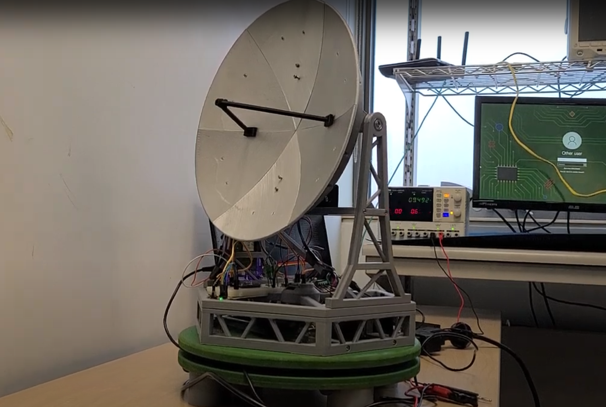
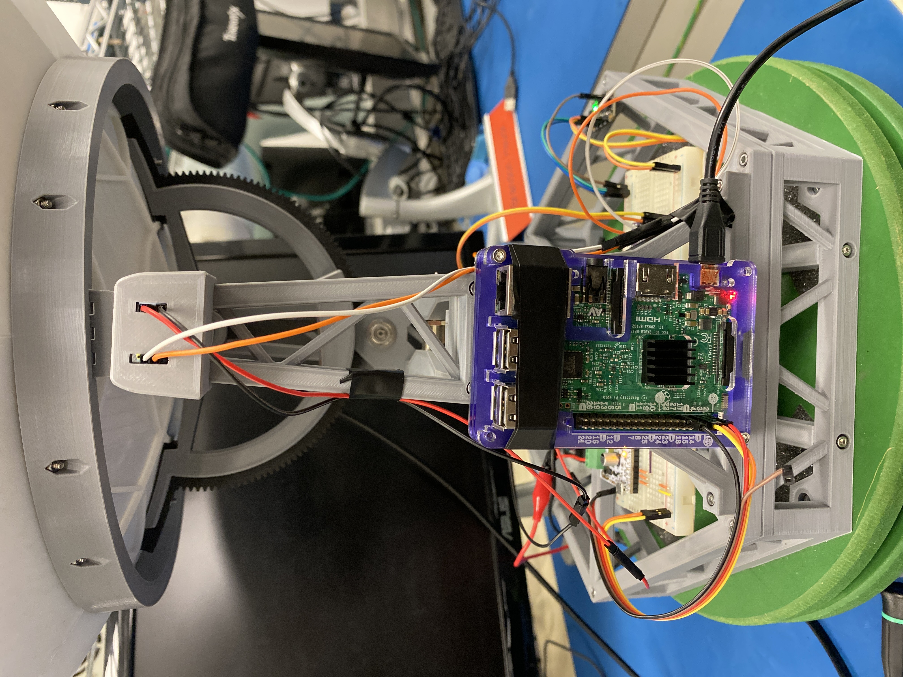
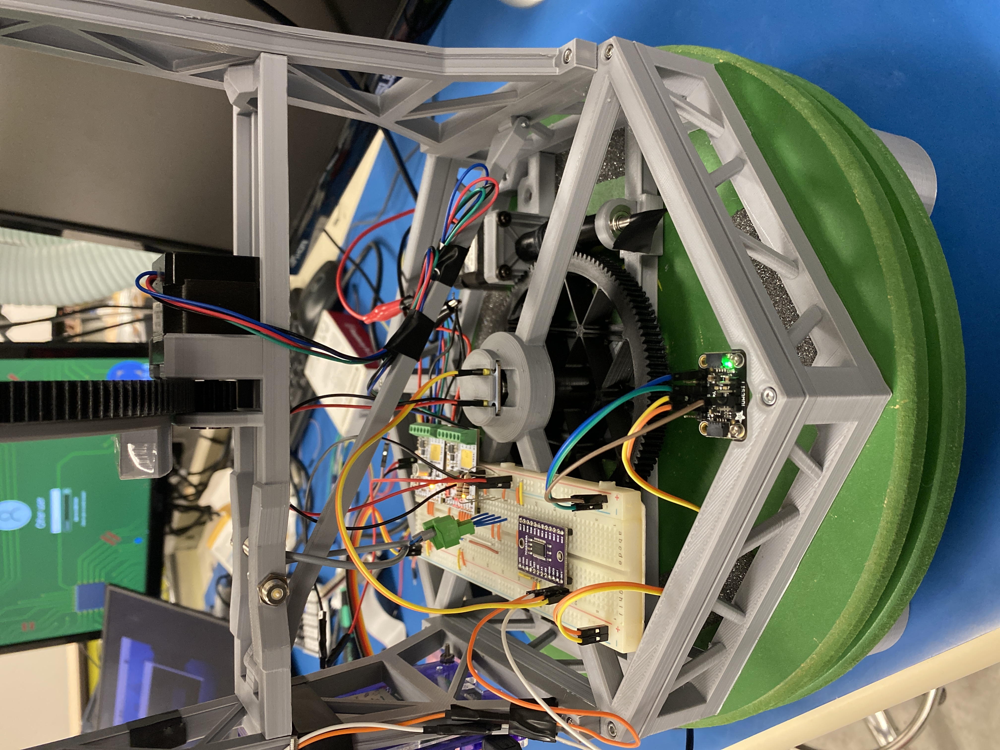

Semester Five Project Two: Satellite
This project involved building a satellite-tracking system around a provided motorized dish. The system accepts two-line element (TLE) data for a satellite, calculates where that satellite should appear in the sky, and controls the dish so it can follow the target.

The completed satellite-tracking system with its dish, Raspberry Pi, and control electronics.
Project Overview
The tracker combines software-based orbital prediction with physical sensor and actuator control. Given a satellite identifier and TLE data, the software obtains the observer location, predicts the satellite position, and produces azimuth and elevation angles for the dish.

Raspberry Pi wiring and the dish's sensor and actuator connections.

The dish actuator assembly used to position the tracker.
Satellite Tracking
TLE data describes the satellite's orbit in an Earth-Centered Inertial (ECI) reference frame. The tracking algorithm uses the satellite state vector and simplified general perturbation models to predict its position. That position is transformed through Earth-Centered, Earth-Fixed (ECEF) coordinates and finally into a topocentric coordinate system centered on the observer.
The topocentric result gives the two values needed to aim the dish: azimuth, the horizontal angle measured clockwise from true north, and elevation, the vertical angle above the observer's horizon. The observer's location and the current time are essential because both the Earth and the satellite are moving.
Software and Data Sources
The system uses a TLE API to retrieve current orbital data and a geocoder to identify the observer's location. Ephem and related packages provide the orbital calculations, while the application combines the resulting satellite ID, observer position, azimuth, and elevation into the commands needed by the dish controller.
Sensor and Actuator Interface
The Raspberry Pi interfaced with the sensors via I2C. The magnetic potentiometers report position information used to determine the dish orientation, while the actuators move the dish toward the calculated azimuth and elevation.
Validation and Results
The tracking results were compared against Ansys STK as a reference. The project presentation reported overall ground-tracking accuracy above 99.9%, azimuth accuracy of approximately 99%, and elevation accuracy of approximately 90% or better. These results showed that the coordinate transformations and pointing calculations were producing useful dish-control values.
Satellite tracker test video.